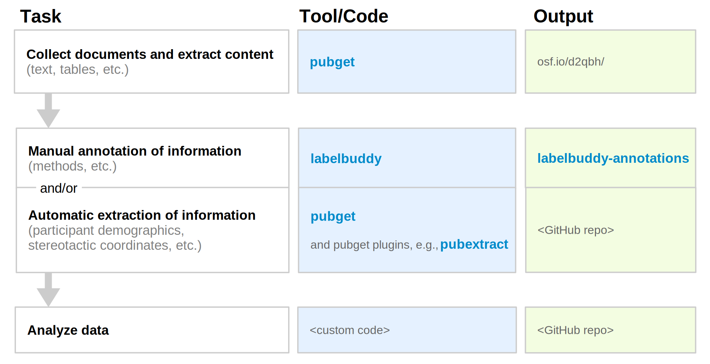

The biomedical literature comprises millions of articles and is expanding quickly. Due to this overwhelming size, using it efficiently often involves systematic or automated methods, collectively known as text-mining. A text-mining project involves several steps: finding relevant articles, downloading them, extracting their text, extracting information from the text and finally running the main analysis which yields scientific insights. More often than not, the first steps of this process -- data collection and curation -- take a frustrating amount of time and effort, and are performed in a way that is difficult to reproduce or extend later.
Here, we describe useful tools and a simple workflow that make text-mining of the biomedical literature easier, more transparent and more fun. We hope to help you streamline the first tedious steps of your text-mining project and focus on the part you care about: extracting and analyzing high-quality information from text, rather than downloading, parsing and pre-processing thousands of articles.
Here is an overview of our suggested workflow, along with the tools we offer and possible places to store the output of each step.

Figure explanation: